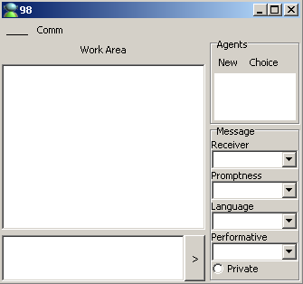
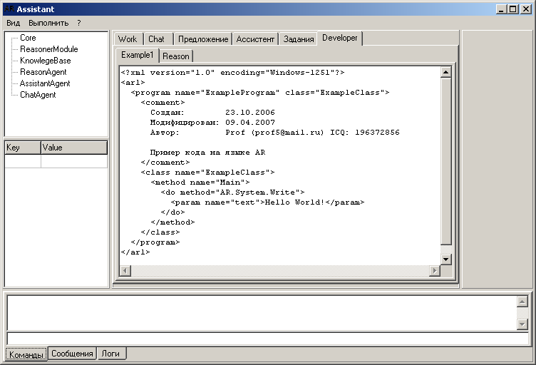
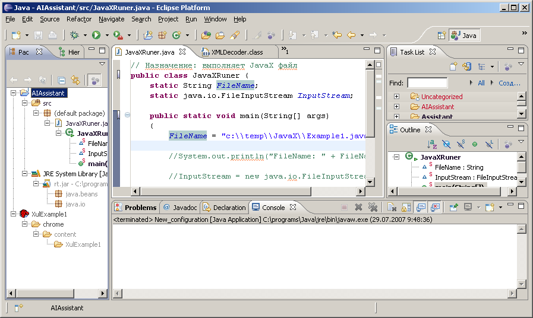

1.1. Проект создается как Shareware, т.е. можно сначала попробовать, а затем купить. Но конкретный подвид бизнес-модели еще нужно уточнить (ограничения по времени или по функциям, либо выпускать 2 версии одновременно - бесплатную но ограниченную версию и коммерческую).
AIAssistant - это обычная программа, запускаемая пользователем. Основной управляющей формой является панель управления. Она позволяет производить настройки (язык общения, виды запуска и т.д.), а также открывать новые виды работ в отдельных формах. В каждой такой диалоговой форме создается новая группа агентов, позволяющих выполнять работы, требующиеся пользователю. В диалоговых формах имеется чат - консоль для текстового общения пользователя с группой агентов, а также дополнительные элементы управления. Дополнительно в диалоговой форме имеется зона для работы с информацией в стиле Windows.
3.1. Небольшой набор игр, вероятно логических, карточных и др.
3.2. Универсальный навигатор по БЗ, с помощью которого можно осуществлять основные манипуляционные операции с информацией как внутри других работ, так и отдельно.
3.3. Органайзер (учет работ, записная книжка, работа с расписаниями, календарь и т.д.).
3.4. Система учета книг, дисков и т.д., основанная на навигаторе.
3.5. Экспертная система (ЭС) по выбору, модификации имеющихся и созданию новых видов работ.
3.6. ЭС помощи, подсказок, пояснений.
3.7. Каталогизатор дисков.
4.1. Основой хранения информации является иерархическая база знаний, совместимая с языком OWL консорциума W3.ORG
4.2. Система состоит из отдельных групп агентов. Каждая группа агентов имеет собственный интерфейс с пользователем. Агенты программируются с помощью правил, которые сохраняются в БЗ.
5.1. Разработка подробного плана работ.
5.2. Создание структуры БД.
5.3. Разработка принципов программирования агентов.
5.4. Создание класса программного агента.
5.5. Разработка визуального интерфейса диалога с пользователем.
5.6. Сборка ядра проекта.
5.7. Отладка ядра проекта.
5.8. Разработка приложений, указанных в п.3.
5.9. Оформление проекта (иконки, заставки, задники, кнопки и т.д.).
5.10. Создание инсталляционного дистрибутива.
5.11. Тестирование и окончательная отладка дистрибутива.
5.12. Размещение продукта на Shareware архивах, реклама и т.д.
Здесь представлен не полный список инструментов разработчика, применяемый для создания программы AIAssistant.
6.1. Язык программирования - Delphi.
6.2. БД - Firebird 2.0 Embedded version.
6.3. Инсталлятор - InnoSetup.
6.4. Редактор иконок - Microangelo.
6.5. Генератор PAD файла - Padgen.
6.6. Редактор Help файла - RoboHelp
http://ru.wikipedia.org/wiki/MinGW - MinGW
http://ru.wikipedia.org/wiki/GNU_Compiler_Collection - GNU Compiler Collection
http://ru.wikipedia.org/wiki/GCJ - GCJ - GNU Compiler Collection (GCC) для Java
http://ru.wikipedia.org/wiki/GCC - GCC - GNU Compiler Collection
7.1. www.zabaware.com - Ultra Hal Assistant
7.2. Каталогизаторы http://www.3dnews.ru/software/katalog_1/

Комментарии:
Прототип главного окна программы

Eclipse

— Prof1983 2007/07/29 16:37
Консольный интерфейс
Виды базовых наборов
Система AIAssistant будет представлена в следующих видах:
AIAssistant Studio - программа, реализующая функции программирования агентов системы AIAssistant. Может работать и без хранилища знаний, используя другие источники данных.
AIAssistant Viewer - программа, ориентированная на конечного пользователя и предназначенная для просмотра подготовленных при помощи AIAssistant Studio отчетов (форм). AIAssistant Viewer позволяет минимизировать требования к пользователю системы, т.к. все необходимые операции выполняются автоматически при помощи подготовленных ранее сценариев обработки. Пользователю AIAssistant Viewer необходимо только выбрать и настроить вариант отображения полученных результатов.
AIAssistant Server – служба, обеспечивающая удаленную обработку данных и предоставляет доступ к хранилищу знаний. Позволяет автоматически обрабатывать данные и переобучать модели на сервере, оптимизирует выполнение сценариев за счет кэширования проектов и использования многопоточной обработки.
AIAssistant Client – клиент доступа к AIAssistant Server. Обеспечивает доступ к серверу из сторонних приложений и управление его работой.
В каждой из модификаций обязательно присутствует базовая платформа (AIAssistant.exe) со следующими частями:
AIAssistant Core - Ядро системы. Главная часть системы.
AIAssistant KnowlegeBase - хранилище знаний.
Все готовые базовые наборы распространяются как ShareWare продукты.
© AIKernel 2007-2011
29.07.2007 - 27.04.2011